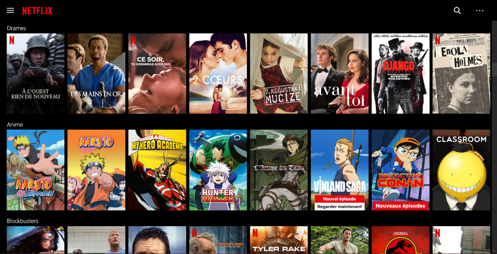
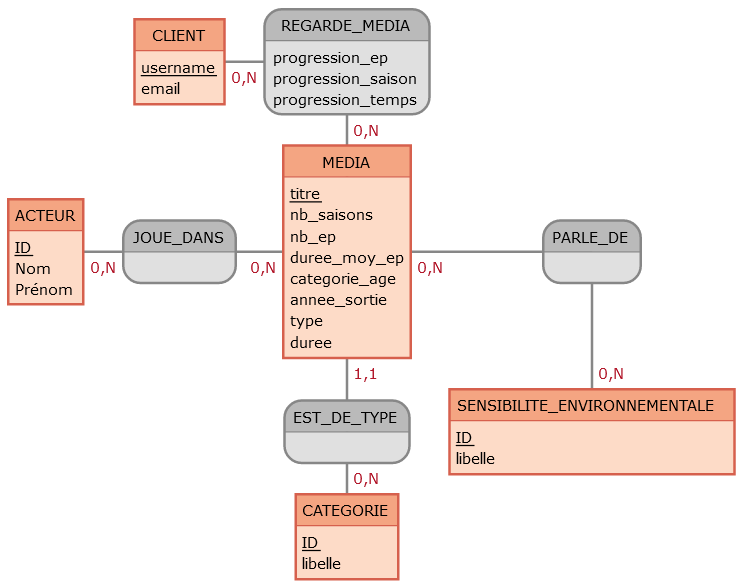

Notre Projet
Notre domaine
Notre domaine d'application est une plateforme de streaming inspiré de Netflix. Nous y stockons des informations sur le client, les médias (films et séries), les acteurs, les catégories et la sensibilité environnementale abordée par le média. De plus, nous stockons également des informations sur la progression de visionnage et qui joue dans quoi.
Le MCD de notre projet
Les Entités
Le client correspond à l'utilisateur courant de la plateforme de streaming.
CLIENT (username, email) :
- username : Correspond au nom d'utilisateur du client (Clé primaire)
- email : Correspond à l'e-mail du client
Un média correspond à une proposition d'une réalisation audiovisuelle aux clients,
il peut être une série ou un film.
MEDIA (titre, nb_saisons, nb_ep, duree_moy_ep, categorie_age, annee_sortie, type,
duree)
- titre : Correspond au nom du média (Clé primaire)
- nb_saisons : Correspond au nombre de saison(s) présente dans une série
- nb_ep : Correspond au nombre d'épisode(s) présente dans une série
- duree_moy_ep : Correspond à la durée moyenne de tous les épisodes d'unesérie
- categorie_age : Correspond à la catégorie d'âge du média
- annee_sortie : Correspond à l'année de sortie du média
- type : Correspond soit à une série soit à un film
- duree : Correspond à la durée d'un film ou à NULL si c'est une série
Acteur qui joue dans un média.
ACTEUR (Nom, Prénom)
- Nom : Correspond au nom de famille de l'acteur (Clé primaire)
- Prénom : Correspond au prénom de l'acteur (Clé primaire)
Une catégorie d'un média.
CATEGORIE (ID, libelle)
- ID : Identifiant de la catégorie (Clé primaire)
- libelle : Correspond au nom de la catégorie
Rapport à l'environnement.
SENSIBILITE_ENVIRONNEMENTALE (ID, libelle)
- ID : Identifiant de la catégorie du sujet environnemental (Clé primaire)
- libelle : Correspond au nom du sujet environnemental
Les Associations
Un client regarde des films ou des séries tous possédant un titre. On y met ici les
informations sur la
progression du média.
REGARDE_MEDIA (progression_ep, progression_saison, progression_temps)
- progression_ep : Dans le cas d'une série, cela correspond au numéro de l'épisode courant. Dans le cas d'un film, cette valeur sera mise NULL
- progression_saison : Dans le cas d'une série, cela correspond au numéro de la saison courante. Dans le cas d'un film, cette valeur sera mise NULL
- progression_temps : Correspond au temps de progression du film ou de l'épisode courant de la série en nombre de minutes
Justification des cardinalités : un client peut regarder 0 à N médias, de même un
média peut être
visionné par 0 à N clients.
Association liant MEDIA et CATEGORIE.
EST_DE_TYPE
Association liant MEDIA et CATEGORIE
Justification des cardinalités : Un média appartient à une seule catégorie et une
catégorie peut contenir 0 à N films.
JOUE_DANS
Association liant MEDIA à ACTEUR
Justification des cardinalités : un acteur peut jouer dans 0 à N films et un média peut
contenir 0 à N acteurs (ici, 0 décrit le cas où aucun acteur notable n'y a
joué).
PARLE_DE
Association liant MEDIA et SENSIBILITE_ENVIRONNEMENTALE
Justification des cardinalités : un média peut aborder de 0 à N sujets environnementaux
et un sujet environnemental peut contenir 0 à N médias.